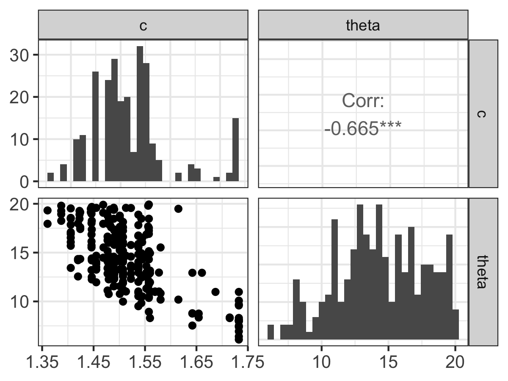
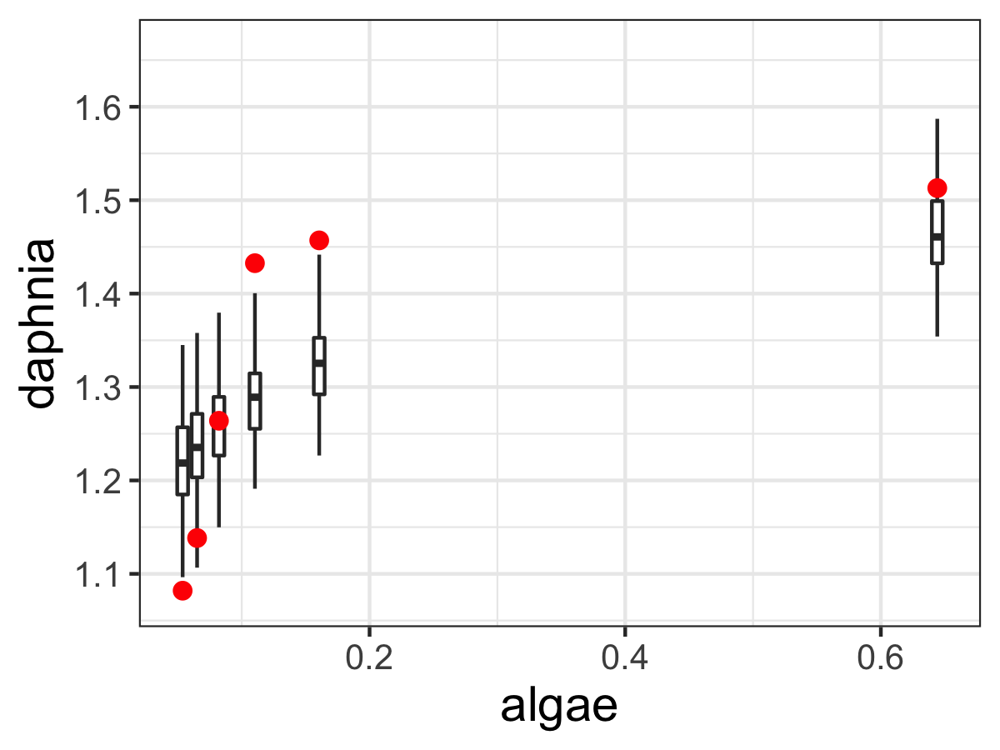
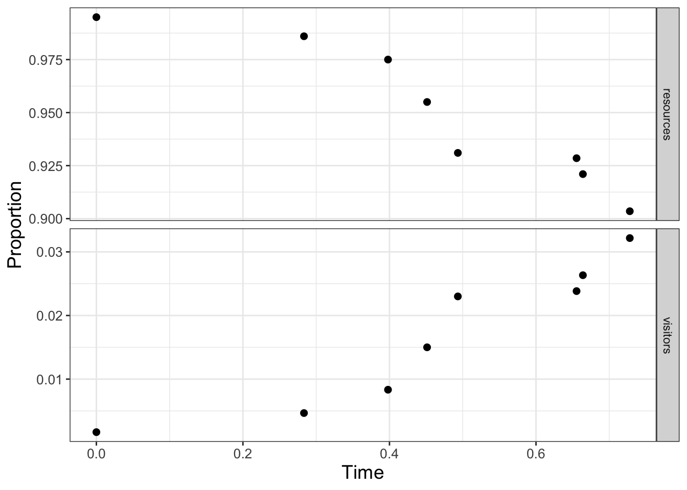
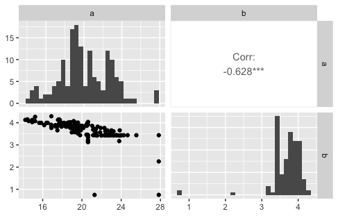
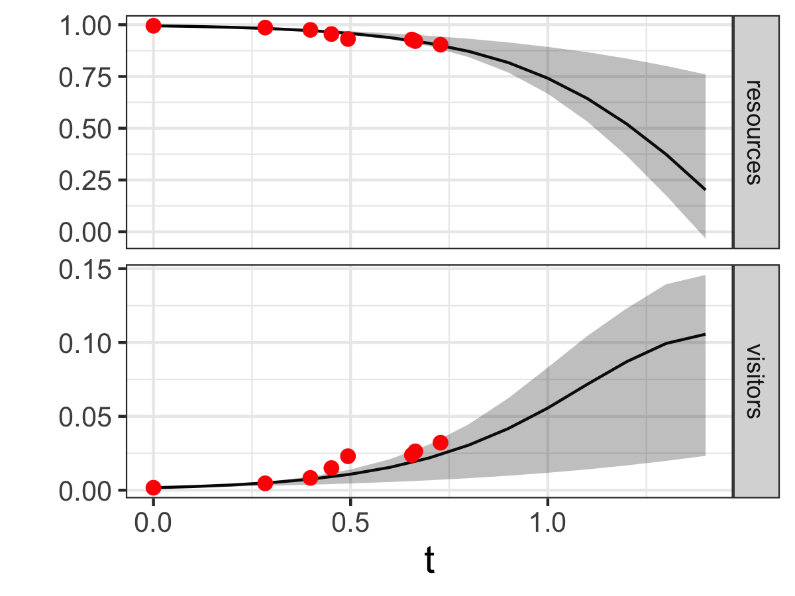

## Step 1: Define the model and parameters
phos_model <- daphnia ~ c * algae^(1 / theta)
# Define the parameters that you will use with their bounds
phos_param <- tibble(
name = c("c", "theta"),
lower_bound = c(0, 1),
upper_bound = c(2, 20)
)13 Markov Chain Monte Carlo Parameter Estimation
We have explored likelihood functions, iterative methods, and the Metropolis-Hastings algorithm. In this chapter all these together introduce a sophisticated parameter estimation algorithm called Markov Chain Monte Carlo (MCMC) parameter estimation, which has a rich history (Richey 2010). MCMC methods can be highly computational; more importantly you already have the skills in place to understand how the MCMC method works. To do the heavy lifting we will rely on functions from the demodelr package. Let’s get started!
Note
This chapter uses following libraries: ggplot2, and tibble (all part of the tidyverse) and demodelr. See Section 2.3 on how to install packages. Prior to running any code in this section, include library(tidyverse) and library(demodelr).
13.1 The recipe for MCMC
The MCMC approach is a systematic exploration to determine the set of parameters that optimizes the value of the log-likehood function, given the data. It may be helpful to think of the MCMC method as a recipe, and in order to “run” the MCMC method, you will need four key ingredients:
- Model: a function that we have for our dynamics (this is \(\displaystyle \frac{d\vec{y}}{dt} = f(\vec{y},\vec{\alpha},t)\)), or an empirical equation \(\vec{y}=f(\vec{x},\vec{\alpha})\).
- Data: a data frame (
tibble) or a spreadsheet file (to read intoR) of the data you wish to use for parameter estimation. - Parameter bounds: upper and lower bounds on your parameter values. We typically assume an initial uniform distribution on the parameters.
- Initial conditions: (optional) needed if your model is a differential equation.
- Run diagnostics: specifications for the MCMC code, which may include how long you will run the code and other aspects of the MCMC algorithm.
We will work step by step through two examples of an application of the MCMC algorithm using both a differential equation and an empirical model. Example code is provided so you can also run your own estimates. The workflow that we will use is:
Define the model, parameters, and data \(\rightarrow\) Determine MCMC settings \(\rightarrow\) Compute MCMC estimate \(\rightarrow\) Analyze results.
Having an established workflow helps to breakdown the process step by step, making it easier to check for any coding errors.
13.2 MCMC parameter estimation with an empirical model
The first step of our workflow is to “Define the model and parameters”. Here we return to the problem exploring of the phosphorous content in algae (denoted by \(x\)) compared to the phosphorous content in daphnia (denoted by \(y\)), and estimating \(c\) and \(\theta\) from Equation 13.1.
\[ y = c \cdot x^{1/\theta} \tag{13.1}\]
The parameters \(c\) and \(\theta\) from Equation 13.1 range from \(0 \leq c \leq 2\) and \(1 \leq \theta \leq 20\). To define the model we use similar code to how we defined models in Chapter 8. Then to define the parameters we will use a tibble, specifying the upper and lower bounds:
Notice how we defined that tibble called phos_param, which has three columns: name which contains the name of the variables in our model (c and theta), the lower (lower_bound) and upper (upper_bound) for the parameters (listed in the same order as the parameters listed in name).
The data that we use is the dataset phosphorous, which is already located in the demodelr package).
The next two steps in our workflow (Determine MCMC settings \(\rightarrow\) Compute MCMC estimate) are combined together below:
## Step 2: Determine MCMC settings
# Define the number of iterations
phos_iter <- 1000
## Step 3: Compute MCMC estimate
phos_mcmc <- mcmc_estimate(
model = phos_model,
data = phosphorous,
parameters = phos_param,
iterations = phos_iter
)The variable phos_iter specifies how many iterations we will run of the MCMC method. Notice that mcmc_estimate has several inputs, which for convenience we write on separate lines. There are four required inputs to the function mcmc_estimate and several predefined inputs; you will explore these further in Exercise 13.3.
The function mcmc_estimate may take some time (which is OK). But once it finishes a tibble is produced, which we call phosphorous_mcmc (run this code on your own):
glimpse(phos_mcmc)Notice phos_mcmc contains four columns:
accept_flagtells you if at that particular iteration the MCMC estimate was accepted or not. This is a categorical variable ofTRUEorFALSEl_hoodis the value of the likelihood for that given iteration.- The values of the parameters follow on the next few lines. Notice that \(\theta\) is written as
thetain the resulting data frame.
The final step of our workflow is to “Analyze results”. Fortunately the demodelr package has a function called mcmc_analyze to help you:
## Step 4: Analyze results:
mcmc_analyze(
model = phos_model,
data = phosphorous,
mcmc_out = phos_mcmc
)The function mcmc_analyze filters phos_mcmc whenever the variable accept_flag is TRUE. This function will compute parameter statistics (e.g. median and 95% confidence intervals) to be displayed at the console. In addition this function will generate two different types of graphs.1 Let’s examine each one individually. The first plot (Figure 13.1 is called a pairwise parameter plot, which is a collection of different plots together in a square matrix pattern, sized to the number of parameters that were estimated.

Along the diagonal of Figure 13.1 is a histogram of the accepted parameter values from the Metropolis algorithm. Depending on the results that you obtain, you may have some interesting shaped histograms. Generally they are grouped in the following ways:
- well-constrained: the parameter takes on a definite, well-defined value. The parameter \(c\) seems to behave like this.
- edge-hitting: the parameter seems to cluster near the edges of its value.
- non-informative: the histogram looks like a uniform distribution. The parameter \(\theta\) has some indications of being edge hitting, but we would need more iterations in order to confirm.
The off-diagonal plots in Figure 13.1 are interesting as well. These plots are a scatter plot of the accepted values for the two parameters in the particular row and column, and the upper off-diagonal reports the correlation coefficient \(r\) from simple linear regression of the variables in that particular row and column. The asterisks (*) denote the degree of significance of the linear correlation.
Examining the off-diagonal terms in Figure 13.1 helps ascertain the degree of equifinality in a particular set of variables (Beven and Freer 2001). In Figure 13.1 it looks like as c increases, \(\theta\) decreases. This degree of linear coupling means that we may not be able to independently resolve each parameter separately. Each model and parameter estimation is different, so be prepared to be surprised!
The presence of equifinality in a model does not mean the parameter estimation is a failure - just that we need to be aware of these relationships. Perhaps we may be able to go out in the field and measure a parameter (for example \(c\)) more carefully, narrowing the range of accepted values.
The second figure that is produced from mcmc_analyze displays an ensemble estimate of the model results with the data (Figure 13.2). The ensemble average plot provides a high-level model-data overview. Figure 13.2 is generated when the model (phos_mcmc) is run for each accepted parameter estimate in phos_mcmc. At each of the data points in Figure 13.2 a boxplot is produced from the model runs. The median, and the 25th and 75th percentile make up the box. The whiskers extend no further than 1.5 of the difference between the 25th and 75th percentile. By eye, it seems that the model and estimated parameters fit the data, but there is still wide variation in the model predictions. Perhaps this variation is caused by relative wide confidence intervals on our parameters (Figure 13.1).

13.3 MCMC parameter estimation with a differential equation model
Next let’s try parameter estimation with a differential equation model. Here the measured data are solutions to a differential equation, which contains unknown parameters. Once the MCMC method proposes a parameter, then the differential equation needs to be solved numerically with Euler’s or a Runge-Kutta method before evaluating the likelihood function.2
The example that we are going to use relates to land use management, in particular a coupled system between a resource (such as a national park) and the number of visitors it receives (Sinay and Sinay 2006). The tourism model relies on two nondimensional scaled variables, \(R\) which is the amount of the resource (as a percentage) and \(V\) the percentage of visitors that could visit (also as a percentage):
\[ \begin{split} \frac{dR}{dt}&=R\cdot (1-R)-aV \\ \frac{dV}{dt}&=b\cdot V \cdot (R-V) \end{split} \tag{13.2}\]
Equation 13.2 has two parameters \(a\) and \(b\), which relate to how the resource is used up as visitors come (\(a\)) and how as the visitors increase, word of mouth leads to a negative effect of it being too crowded (\(b\)).
For this case we are going to use a pre-defined dataset of the number of resources and visitors to a national park as reported in Sinay and Sinay (2006) (this is the parks dataset in the demodelr package) which is plotted in Figure 13.3.

As the visitors \(V\) increase in Figure 13.3, the percentage of the resources \(R\) decreases. Notably though, the data on both variables may be limited. In Figure 13.3 the proportion of visitors ranges from 0.9 to 1, and the resources ranges up to 0.03. Perhaps from this limited dataset given we can estimate the parameters \(a\) and \(b\) and then forecast out as time increases. We will estimate the parameters \(a\) and \(b\) in Equation 13.2 with the data shown in Figure 13.3. We are going to assume that \(0 \leq a \leq 30\) and \(0 \leq b \leq 5\). We will still use the same workflow (Define the model, parameters, and data \(\rightarrow\) Determine MCMC settings \(\rightarrow\) Compute MCMC estimate \(\rightarrow\) Analyze results) as we did in estimating parameters for an empirical model. Since this workflow was presented earlier we will combine the first three steps below:
## Step 1: Define the model, parameters, and data
# Define the tourism model
tourism_model <- c(
dRdt ~ resources * (1 - resources) - a * visitors,
dVdt ~ b * visitors * (resources - visitors)
)
# Define the parameters that you will use with their bounds
tourism_param <- tibble(
name = c("a", "b"),
lower_bound = c(10, 0),
upper_bound = c(30, 5)
)
## Step 2: Determine MCMC settings
# Define the initial conditions
tourism_init <- c(resources = 0.995, visitors = 0.00167)
deltaT <- .1 # timestep length
n_steps <- 15 # must be a number greater than 1
# Define the number of iterations
tourism_iter <- 1000
## Step 3: Compute MCMC estimate
tourism_out <- mcmc_estimate(
model = tourism_model,
data = parks,
parameters = tourism_param,
mode = "de",
initial_condition = tourism_init,
deltaT = deltaT,
n_steps = n_steps,
iterations = tourism_iter
)Notice how mcmc_estimate has some additional arguments. Most important is the option mode "de", where de stands for differential equation. (The default mode is emp, or empirical model - like the phosphorous data set.) If the de mode is specified, then you also need to define the initial conditions (tourism_init), \(\Delta t\) (deltaT), and timesteps (n_steps) in order to generate the numerical solution.
Visualizing the data also is done with mcmc_analyze:
## Step 4: Analyze results
mcmc_analyze(
model = tourism_model,
data = parks,
mcmc_out = tourism_out,
mode = "de",
initial_condition = tourism_init,
deltaT = deltaT,
n_steps = n_steps
)Examining the parameter histograms (Figure 13.4) shows \(b\) to be well-constrained. The histogram for \(a\) seems like it could be well-constrained - but we may need to run more iterations to confirm this.

The model results and confidence intervals show good agreement to the data (Figure 13.5). Additionally the model forecasts out in time confirming that as visitors increase, the resources in the national park will decrease due to overuse. In contrast to Figure 13.2, the black line in Figure 13.5 represents the median and the grey shading is the 95% confidence interval for all timesteps defined in solving the model.

13.4 Timing your code
As you can imagine the more iterations we have the better our parameter estimates will be. However, this means the full estimate with that number of iterations will take some more time. Before doing that, you first should get an estimate for the length of time it takes to run this code. Fortunately R has a stopwatch function. Let’s check this out with one iteration of the phosphorous dataset:
# This "starts" the stopwatch
start_time <- Sys.time()
# Compute a single mcmc estimate
phosphorous1_mcmc <- mcmc_estimate(
model = phos_model,
data = phosphorous,
parameters = phos_param,
iterations = 1
)
# End the stopwatch
end_time <- Sys.time()
# Determine the difference between the start and end times
end_time - start_timeTime difference of 0.09327507 secsTiming the code for one iteration gives you a ballpark estimate for a full MCMC parameter estimate. If we were to run N MCMC iterations, a good benchmark would be to multiply the time difference (end_time - start_time) by N. Performance time varies by computer and the other programs / apps that are running at the same time. However, this gives you an estimate of what to expect.3
13.5 Further extensions to MCMC
For the examples in this chapter we limited the number of iterations to a smaller number to make the results computationally feasible. However we can extend the MCMC approach in two notable ways:
One approach is to separate the data into two different sets - one for optimization and one for validation. In this approach the “optimization data” consists of a certain percentage of the original dataset, leaving the remaining to validate the forward forecasts. This is a type of cross-validation approach, and is generally preferred because you are demonstrating the strength of your model ability against non-optimized data.
We also run multiple “chains” of optimization, starting from a different value in parameter space. What we do then after running each of these chains is to select the one with the best log-likelihood value, and run another MCMC iteration starting at that value. The idea is with a different chain we have sampled the parameter space and are hopefully starting near an optimum value.
As you can see, the MCMC algorithm is an extremely powerful technique for parameter estimation. While MCMC may take additional time and programming skill to analyze - it is definitely worth it!
13.6 Exercises
Exercise 13.1 Re-run both of the MCMC examples in this chapter, but increase the number of iterations to \(10,000\). Analyze your results from both cases. How does increasing the number of iterations affect the posterior parameter estimates and their confidence intervals? Does the log-likelihood value change?
Exercise 13.2 Time the MCMC parameter estimate for the phosphorous dataset for \(1\) iteration. Then time the MCMC parameter estimate for \(10\), \(100\), and \(1000\) iterations, recording the times for each one. Make a scatterplot with the number of iterations on the horizontal axis and time on the vertical axis. How would you characterize the relationship between the number of iterations and the time it takes to run the code? How long would it take to compute an MCMC estimate with \(10,000\) iterations?
Exercise 13.3 The function mcmc_estimate has several other input variables that are set to default values. What are they and how would you explain their use? (Hint: to see the documentation associated with this function type ?mcmc_estimate at the R console.)
Exercise 13.4 For the parks model (Equation 13.2) studied in this chapter, compare the 1:1 and the posterior parameter plots (Figure 13.4). Write a summary of each panel of the plot. Apply your understanding of equifinality and other observations to determine by how much you have estimated the parameters \(a\) and \(b\) from the data.
Exercise 13.5 Run an MCMC parameter estimation on the dataset yeast from Gause (1932), where the equation for the volume of yeast \(V\) over time is given by the following equation for a yeast growing in isolation:
\[ V = \frac{K}{1+e^{a-bt}}, \]
where \(K\) is the carrying capacity, \(a\) and \(b\) respective rate constants.
- Show that when \(V(0)=0.45\), \(a = \ln(K/0.45-1)\).
- Rewrite the \(V(t)\) equation without \(a\).
- With the
yeastdata, perform an MCMC estimate for this equation. (Reminder: \(\ln(5)\)) is implemented aslog(5)inR.)
Use the following settings for your MCMC parameter estimation:
- \(K:\) 1 to 20
- \(b\): 0 to 1
- 1000 iterations
When setting up the MCMC method, be sure to name the variables in your model to match the yeast data frame.
- Report all outputs from the MCMC estimation (this includes parameter estimates, confidence intervals, log-likelihood values, and any graphs). Compare your results to the results from Exercise 13.6.
Exercise 13.6 Another model for this growth of yeast is the function \(\displaystyle V= K + Ae^{-bt}\).
- Show that when \(V(0)=0.45\), \(A = K - 0.45\).
- Rewrite the initial equation without \(A\).
- With the
yeastdata, apply an MCMC estimate for this equation.
Use the following settings for your MCMC parameter estimation:
- \(K:\) 1 to 20
- \(b\): 0 to 1
- 1000 iterations
When setting up the MCMC method, be sure to name the variables in your model to match the yeast data frame.
- Report all outputs from the MCMC estimation (this includes parameter estimates, confidence intervals, log-likelihood values, and any graphs). Compare your results to the results from Exercise 13.5.
Exercise 13.7 Run an MCMC parameter estimation on the dataset wilson according to the following differential equation:
\[ \frac{dP}{dt} = b(N-P), \]
where \(P\) represents the mass of the dog. Use the following settings for your MCMC parameter estimation:
- \(N\): 60 to 90
- \(b\): 0 to .01
- \(P(0)=5\)
- \(\Delta t = 1\) day
- Number of timesteps: 1500
- Number of iterations: 1000
When setting up the MCMC method, be sure to name the variables in your model to match the wilson data frame. Be sure to report all outputs from the MCMC estimation (this includes parameter estimates, confidence intervals, log-likelihood values, and any graphs).
Beven, Keith, and Jim Freer. 2001. “Equifinality, Data Assimilation, and Uncertainty Estimation in Mechanistic Modelling of Complex Environmental Systems Using the GLUE Methodology.” Journal of Hydrology 249 (1-4): 11–29. https://doi.org/10.1016/S0022-1694(01)00421-8.
Gause, G. F. 1932. “Experimental Studies on the Struggle for Existence: I. Mixed Population of Two Species of Yeast.” Journal of Experimental Biology 9 (4): 389–402.
Richey, Matthew. 2010. “The Evolution of Markov Chain Monte Carlo Methods.” The American Mathematical Monthly 117 (5): 383–413.
Sinay, Laura, and Leon Sinay. 2006. “A Simple Mathematical Model for the Effects of the Growth of Tourism on Environment.” In New Perspectives and Values in World Tourism and Tourism Management in the Future, 20-26 November, 2006. Alanya, Turkey.
To see each graph, you can click the left arrow button on the Plots tab in the lower right hand pane of the RStudio window.↩︎
If we knew the function that solves the differential equation, then we would have an empirical model.↩︎
I am a big fan of “set it and forget it” - meaning I set up the code before I go to sleep and it is ready in the morning!↩︎